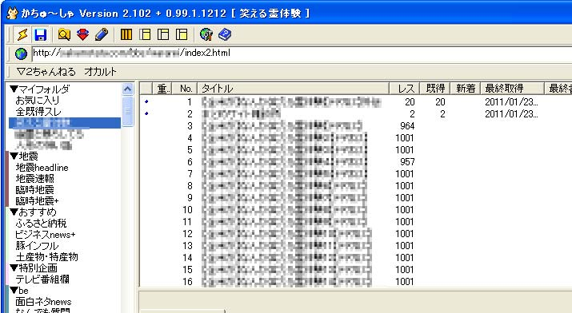

かちゅ〜しゃでの設定方法 かちゅ〜しゃ本体は現在バージョンアップが止まっていて利用に当たってはkage.exeで仕様の変更に対応しているそうです。２ちゃんねるやしたらば以外の掲示板では古い仕様にしか対応していないようで、若干の不具合が出ます。インストール方法や使い方はhttp://kage.monazilla.org/を参照して下さい。 まず、かちゅ〜しゃのインストールされているフォルダを開きます。スタートメニューのかちゅ〜しゃアイコンを右クリックしてプロパティウインドウを表示し、リンク先を探すボタンをクリックすると楽です。 それからかちゅ〜しゃを起動します。既に起動中の場合はいったん終了させてから再度起動させます。  左側のマイフォルダの中に先程設定した内容ができあがります。 レス書きスレ立ては普通にできます。 |